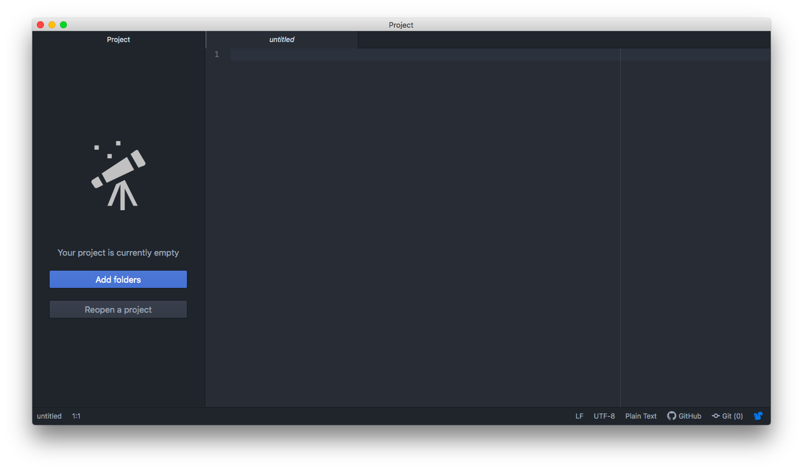
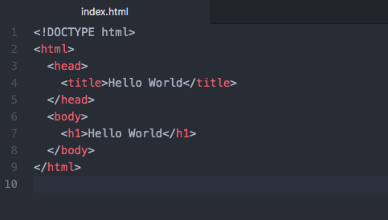
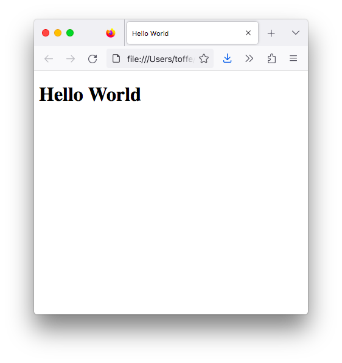
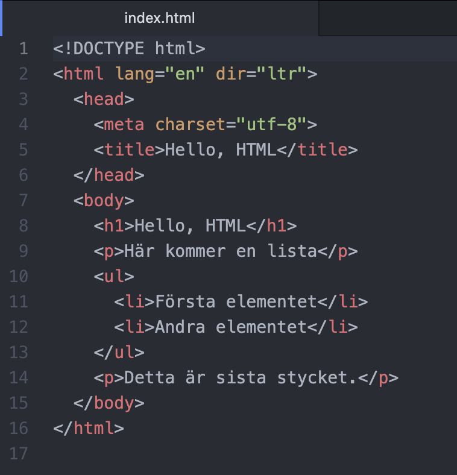
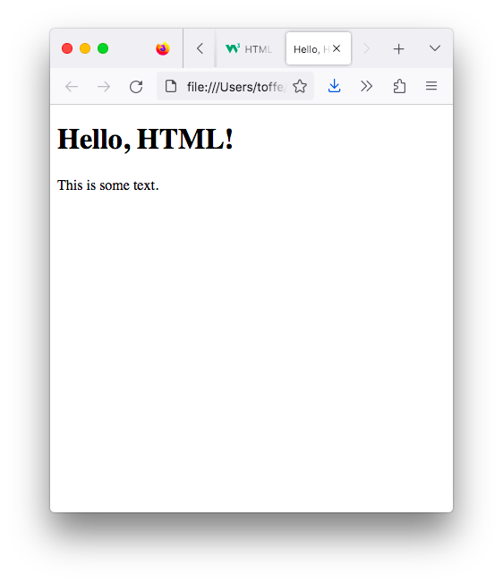

1. Komma igång med HTML
Varenda webbsida är uppbyggd med HTML syntax. För att kunna skriva HTML räcker det med vilken textredigerare som helst så länge du ser till att filformatet är .html. Sedan behöver själva webbsidan några syntax så att en browser (tex Chrome, Edge, Firefox, Opera eller Safari), programmet som du öppnar sidan med, förstår vilken text som skall vara var.
I detta material jobbar vi med Atom för att skapa våra sidor. Ladda ner och installera.
Märk att vi kommer att göra helt statiska sidor. För att göra webb applikationer så behöver du kunskap i tex php eller C#.
Hello World
På vår första webbsida skapar vi texten Hello World. I Atom, skapa ett tomt dokument. Det du får framför dig borde se ut som:

Till vänster kan du lägga till projekt som du jobbar med. Där ser du då mappar och filer som berör projektet. Till höger skriver vi koden. Här kan du ha flera flikar. De kan du stänga med kryss-knappen uppe till höger.
Du kommer snabbt att märka att Atom föreslår åt dig vissa kommandon och syntaxer när du skriver. För att välja från listan så använd dig ac tabularorn på keyboarden.
Skriv in följande kod och spara filen med namnet index.html. När du besöker en webbplats är det sidan index.html som visas först.

Varje tag har en slut-tag. På rad 1 berättar vi att vi har ett HTML dokument. På rad 2 berättar <html> att koden börjar här och på rad 9 tar koden slut </html>. I <head> kommer den information som berättar om sidan. I <title> kommer namnet för sidan. Inom <body> taggarna kommer själva sidan. Rubriker markeras med <h1> till <h6>. <h1> är större än <h2> som är större än <h3> osv.
För att se vad vi har gjort så leta reda på din fil, index.html, på datorn och öppna den i en browser.
I en browser ser vi följande:

Du märker att om du ändrar på texten så ändras webbsidans innehåll. Testa med att skriva till text.
När du jobbar med materialet och uppgifterna kan det löna sig att ha en logisk mappstruktur på datorn. Eftersom du eventuellt kommer att ha en hel del filer med namnet index.html så kan det vara bra att ha varje övning i en egen mapp.
Hello HTML
Tag till nästa och skapa en HTML sida med följande innehåll.

Här berättar vi på rad 4 att tecknen på webbsidan är UTF-8. Men det viktiga är att varje stycke har ett eget <p>-tagg.
Märk också hur vi skapar listor med <ul>-taggen och lägger in själva listelementet med <li>-taggen.
I en browser ser vi följande:

Listor, bilder, länkar och text
I HTML kan en lista vara numrerad <ol> och </ol> eller onumrerad <ul> och </ul>. Själva listelementet är inom <li> och </li>. Du kan ha listor i listor för att skapa underlistor. Formateringen av listor tittar vi närmare på då vi börjar behandla CSS.
Bilder får du infogat med <img src="bilden.png" alt="Texten för bilden">. Här är bilden i samma mapp som webbsidan. Vill du att bilden är i ett eget stycke så kom ihåg att använda dig av <p>.
En länk på en webbsida kan vara extern, leder bort från sidan, eller intern, så att du länkar till ett element på en sida. En extern länk skapar vi på följande sätt <a href="www.yle.fi">här</a> skapar en länk då du klickar på texten "här" leds du till sidan www.yle.fi. Om du använder dig av target syntaxen så kan du styra om länken öppnas i samma fönster, eller i en ny. <a href="www.yle.fi" target="_blank">här</a> öppnar länken i en ny tabb.
För att en intern länk skall fungera behöver du först göra ett ankare i en tag på din sida. Ankaret gör du med id="ankare" i taggen. Till rubriken <h3 id="links"> kommer man med koden <a href="#links">Länkar</a>.
Kursiverad text får vi med <em>, fet stil får vi med <strong> och extra radbrytningar med <br>. Märk att <br> inte har någon slut tagg.
Lägg på minnet följande taggar
<html>behövs för att sidan skall tolkas som html<head>här kommer information om sidan.<title>sidans titel.<body>här kommer själva sidan.<h1>rubriker, numreringen går från 1 till 6.<p>styckeindelning<ol>numrerad lista<ul>onumrerad lista<li>listelement<img src=" ">bilder<a href=" ">länk<strong>fetstil<em>kursiverad stil<br>radbrytning
Uppgifter
- Din första uppgift är att skapa en sida om en resa till Paris. Titta på uppgiften över sidan. Din uppgift är att skapa samma. Märk att rubrikerna är av olika storlek och att listorna är numrerade och onumrerade. Listelementen under September 2016 (Highlights, Full story, Day 1, Day 2, Day 3 och Contact) fungerar som länkar inom dokumentet. "here" i "Click here" leder till den engelskspråkiga Wikipediasidan om Paris.
Bilderna för uppgiften hittar du här.
- Nästa uppgift handlar om att skapa en sida om de bästa stränderna. Studera instruktionerna över sidan. Din uppgift är att skapa samma. Listelementen fungear som interna länkar på sidan.
Bilderna för uppgiften hittar du här.
- Sista uppgiften för detta kapitel hanldar om att skapa en sida för en lunchrestauran. Titta på uppgiften över sidan. Detta är den sida som man kommer till. När man klickar på "Home" så skall man se följande och listan under Menu leder vidare till motsvarande helhet. Skapa motsvarande webbsida.
Bilderna för uppgiften hittar du här.